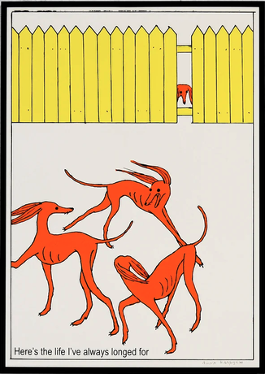
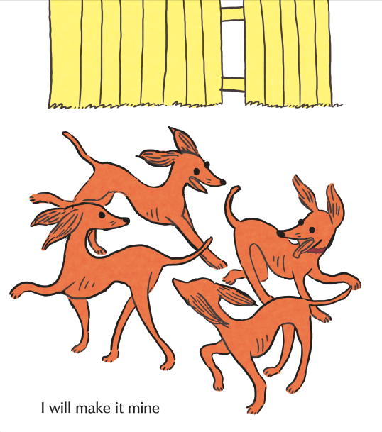

The life I always longed for
I have been thinking about two works of art that I love on the internet.

The first is a piece by the German cartoonist Anna Haifisch. Beneath a yellow fence, three long-legged dogs are cavorting together.
They have the curved ribs and elegance of whippets, and all share the same pointed nose and rusty orange colour. Whirling around each other with their ears wildly thrown back in the wind, paws pointed, one of them has its mouth open in doggy excitement.
The dogs resemble the bright and carefree figures of Matisse’s Dance, a whirling ring of bacchanalian ecstasy. There’s a sense that to see them is to witness something private. They form a closed circuit.
Another dog, with the same pointed nose, is forlornly peeking through a gap in the yellow fence. Beneath the dogs is the caption - Here’s the life I’ve always longed for.
Oh, how I relate to the little dog behind the fence.
Ever since I can remember I’ve felt like that little dog, unable to make the leap to where they want to be. I’ve slunk away instead, nursed perceived failures or slights. Always trying to get to somewhere or become someone, and never feeling like I have arrived.

There is a second image I came across when reading messageboard comments about the piece. In this iteration there are now four dogs in the foreground. The watching dog has joined the dance! And beneath them is a new caption - I will make it mine. It was drawn by an artist with the username molabuddy, who posted it in response to Haifisch’s work on Tumblr. When I first saw this version, I liked the hope of transformation it carried.
Perhaps the life I want might only be one step away from being mine, the dividing fence was always permeable. Could I make it mine, this life I saw other people living? That seemed so close, and yet so impossible to enter?
Recently, one night whilst standing in a cold garden and staring up at the stars, watching my friends laughing and playing cards through the light of a glowing window, I thought about how valuable the moment of yearning is, the moment of looking before you take action. When you see something or someone, and it rings a bell inside you. When you have a vision of yourself in a potential future, and it feels so painful that you aren’t there yet, and that you might never be there.
Here’s the life I always wanted.
I will make it mine.
But there’s some propulsive energy in that yearning feeling, isn’t there? It’s an arrow shot out of your chest, and it might clatter to the floor, or it might keep pulling you in a direction and lead you somewhere you can’t even imagine right now.
In the second image, the dogs could be puppies, and they are clearly happy, with floppy rounded ears and smiles. The first trio of original dogs are so much wilder, sketchier, singular. To pine for someone or something puts that vision on a pedestal, puts up a barrier by the very nature of your desire for it. You can’t know the truth of something when you watch through a gap in the fence. And the nearer you get, the more it will change, until it might be unrecognisable by the time you reach it.